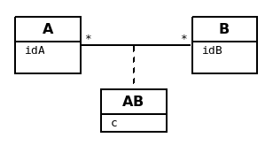
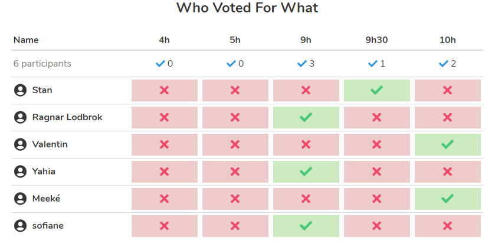

Présentation

Ce support vise à présenter une aide méthodologique en analyse, en vue de constituer un modèle de domaine.
Notions de DF et DMR
Introduction
En phase d’analyse, la collecte des données et leurs relations est au centre des préoccupations.

Après avoir identifier des concepts métier clés, ces derniers seront regroupés (en référence au concept d'encapsulation et de classe) et placés en relation de dépendances (association, heritage).
Notion de Dépendance Fonctionnelle (DF) et Dépendance Multivaluée (DM)
Dépendance Fonctionnelle
Soit A et B, deux données (concept métier) du système.
Def : Lorsqu’une valeur de A (une donnée) permet, au plus, de connaître une et une seule valeur de B, on dit que B dépend fonctionnellement de A.
| Concept | Représentation | Exemple |
|---|---|---|
Dépendance Fonctionnelle |
A est la source et B la destination (ou but) |
La connaissance de l’id d’un client me permet de connaître son nom. |
Caractère d’unicité
Les sources des dépendances sont, par nature, des identifiants, leur valeur est unique au sein du système.
Par exemple, idClient → nomClient, idClient est la clé qui permet l’accès à l’information nomClient. Pour la cohérence du sytème,
cette clé doit être unique (absence de doublons)
|
| La source d’une dépendance engendrera, dans la majorité des cas, une entité dénotant un concept métier. (voir plus bas : règles-de-passage-du-gd-au-modèle-du-domaine-uml) |
Propriétés des DF : Axiomes d’Armstrong
Les axiomes d’Armstrong (du nom de William Ward Armstrong, informaticien et mathématicien Canadien qui a défini les axiomes du système relationnel en 1974)
| Propriété | Définition | Remarque |
|---|---|---|
Réflexivité |
A → A (A propriété quelconque) |
Tautologie |
Augmentation |
si A → B alors A,C → B ∀C |
La source peut être augmentée sans nuire à la DF initiale. Une erreur d’analyse courante. |
Transitivité |
si A → B et B → C alors A → C |
Principe de base du marchandage de données personnelles ! |
Dont on peut déduire les propriétés suivantes :
| Propriété | Définition | Exemple |
|---|---|---|
Pseudo-transitivité |
si A → B et B,C → D alors A,C → D |
Les voleurs de données s’y intéressent fortement… (social engineering attacks) |
Union |
si A → B et A → C alors A → B,C |
(ne concerne bien évidemment que les cibles d’une même source) Permet d’appliquer l'encapsulation |
Décomposition |
si A → B,C alors A → B et A → C |
L’inverse de l’union |
Qualités remarquables des DF
En phase d’analyse, on ne retient que les DF ayant les qualités élémentaire et directe.
Intéressons-nous à ces qualités.
Qualité élémentaire
Def : Une DF est élémentaire si sa source est minimale (non en augmentation)
La DF : A → B est élémentaire s’il n’existe pas un ensemble de propriétés C,
tel que C est sous-ensemble de A, C différent de A, et C → B.
Exemple : Il aurait été faux de conserver la DF :
(id_commande, id_fournisseur) --- > date_commande
si la DF id_commande --- > date_commande suffit.
Qualité directe
Def : Une DF est directe si elle n’est pas transitive.
Contre exemple (DF transitive)
transitivité
A ----------> C si une conséquence des DF : A → B et B → CExemple : idCmd --- > idFournisseur, nomFournisseur,
qui se lit : "la connaisance du numéro de commande me permet de connaître l’identifiant du fourniseur et son nom" (ce qui est logique, vous en conviendrez)
Seulement voilà, la relation idCmd --- > nomFournisseur est une DF obtenue par transitivité s’il existe la DF (et c’est fort probable) : idFournisseur --- > nomFournisseur
Dans ce cas il faut transformer la DF transitive en deux DF directes :
idCmd → idFournisseur et idFournisseur → nomFournisseur
Dépendance Multivaluée
Il a des cas où la connaissance d’une propriété nous permet de connaître plus d’une autres propriétés du sytème.
Les axiomes d’Armstrong sont considérées agir sur les DM.
Def : Lorsqu’une valeur de A permet de connaître plus d’une valeur de B, on dit que B est en dépendance multivaluée avec A, et on le note : A →→ B
| Concept | Représentation | Exemple |
|---|---|---|
Dépendance Multivaluée |
A →→ B ou A -->>B |
idClient →→ idCommande La connaissance de l’id d’un client me permet de connaître l’ensemble de ses identifiants de commande. |
Qualités de DM
En phase d’analyse, nous ne retiendrons que les DM élémentaire, directe et réciproque.
Qualité élémentaire
Def : Une DM est élémentaire si la source est minimum (non augmentée).
Qualité directe
Def : Une DM est directe si aucune décomposition ne peut être appliquée (absence de transitivité)
Réciproques
Def : Lorsque A -->> B et B -->> A, on dit que A et B sont en DM Réciproques (DMR).
| Concept | Représentation | Exemple |
|---|---|---|
Dépendances Multivaluées Réciproques (DMR) |
A →→o←←B ou A-->>o<<--B |
idPays →→o←← idLangueParlee * La connaissance de l’id d’un pays me permet de connaître l’ensemble des langues parlées dans ce pays * La connaissance de l’id d’une langue parlée me permet de connaître l’ensemble des pays où la langue est parlée |
Caractère d’unicité
Tout comme les DF, la valeur de source d’une DMR doit être unique dans le sytème.
Les systèmes de gestion de base de données relationnelles offrent plusieurs moyens de
déclarer une contrainte d’unicité (PRIMARY KEY, CANDIDATE KEY, UNIQUE, …)
|
Conduite de l’analyse
Ce chapitre introduit les principes à suivre lorsqu’on analyse des données en vue de modéliser le domaine métier.
Cette démarche vise à établir une base de données cohérentes et sans doublons.
Principe de base - DEMR
| Ne considérer que les dépendances directes et élémentaires, ainsi que les dépendances multivaluées réciproques. |
Principe 1 - la DF prime sur la DM
Lorsque, dans un contexte donné, A et B sont en relation directe de type A → B et B →→ A, seule la DF (A → B) sera retenue. (prévisage d’une relation type many-to-one).
| Les seules DM retenues sont les DMR |
Principe 2 - DF Source Multi-Attributs == DMR
Toute source multi-attributs d’une DF (DF à partie gauche composée, par exemple (A,B,C) → D,E se doit d’être une
DMR élémentaire, directe et réciproque entre ses membres (prévisage d’une relation type many-to-many).
En appliquant la réflexivité, nous pouvons exprimer cette règle ainsi :
(A,B) -> (A,B) <=> A -->>o<<-- B <=> (A,B)
| Il faut toujours vérifier les qualités directes et élémentaires entre attributs d’une source. |
(A, B, C) <=> A -->>o<<-- B , A -->>o<<-- C, B -->>o<<-- C, A -->> B,C, B ->> A,C et C ->> A,B
et vérifier l’absence d’une DF cachée comme : (B, C) → A par exemple (en application du principe 1)
Représentation graphiques des dépendances
Les dépendances, dans leur ensemble, peuvent graphiquement être représentées par
-
un Graphe de Dépendances (directes et élémentaires) - orienté attribut/donnée
-
un Diagramme de classes UML (orienté entité), où ne figurent que les relations directes et élémentaires. Dans ce contexte une classe est une Entité et les transitivités déduites sont rarement signalées – UML les considère comme des attributs dérivés – avec une notation spéciale
Soit les DF suivantes (contexte : agence de voyage) :
* numClient -> Pays (pays de naissance) * numClient -> Continent (continent préféré) * idPays -> libPays * idPays -> idContinent * idContinent -> libContinent
1/ GD (graphe de dépendances)
Les dépendances sont réparties sur le plan, de façon à favoriser le plus possible leur compréhension.
Exemple de Graphe de Dépendances (focalisation sur les attributs)

2/ Diagramme de classes UML
Exemple de Diagramme de Classes des Entités du Domaine (focalisation sur les classes - réalisé avec dia)
| le stéréotype <<ID>> n’est pas obligatoire, ni <<entity>> , si l’auteur du diagramme spécifie clairement qu’il s’agit de modèle conceptuel du domaine. |
Normalisation GD/MCD
On prendra soin de ne conserver dans le graphe, et diagramme de classes, que les dépendances élémentaires et directes, c-a-d non issues de transitivité. Un tel graphe est en couverture minimale.
Remarque: Un graphe dont toutes les dépendances transitives sont représentées est dit en fermeture transitive.
Ce mode de représentation (couverture minimale)
-
Evite les redondances (une propriété est notée une seule fois)
-
Les DF transitives sont facilement déduites (visible d’un premier coup d’œil)
-
Les rôles joués non triviaux sont textuellement notés
Règles de passage du GD au Modèle du Domaine UML
R1 : A une source d’un DF (à gauche de la flèche) correspond une entité qui admet un identifiant.
| GD | Modèle du domaine |
|---|---|
A-->B |
|

R2 : Un but (une destination) commun à plusieurs DF (à droite de plusieurs flèches) est considéré comme une source (voir R1)
| GD | Modèle du domaine |
|---|---|
-------------------------------
|
R3 : Une dépendance multivaluée réciproque (DMR) engendre une association many-to-many.
| GD | Modèle du domaine |
|---|---|
---------------------------- |
R4 : Une dépendance multivaluée réciproque (DMR) ciblant un attribut engendre une classe association portant l’attribut.
| GD | Modèle du domaine |
|---|---|
La connaissance d’une valeur de Dit autrement, la connaissance d’un couple de valeurs -------------------------------------
|
 |

Exemple d’application GD → MCD
| GD | Modèle du domaine |
|---|---|
----------------------------------------------
|

Réification d’une classe <<association>>
Dans l’exemple précédent, la classe association AB est reliée à une association many-to-many.
Il est possible également de représenter une classe association par une entité "ordinaire", associée à une contrainte d’unicité vers les entités concernées par la relation many-to-many.
Le changement de statut qui consiste à passer d’une association many-to-many à une entité, est une réification (en philosopie, action qui consiste à transposer une abstraction en objet concret)
Observez bien le changement de multiplicité. A noter aussi que c’est la note, liée à l’entité AB
qui spécifie la contrainte associée à cette entité qui aurait pu être également exprimée
sous la forme d’une simple contrainte d’unicité.
|
Vous trouverez un autre exemple dans le chapitre MCD vers SR (entité Documentation)
Héritage et DF/DM
à venir
Exercices
Ex 2
D’après les DF suivantes, construisez un GD et MCD
(a, b) -> c c -> d e -> c
Ex 2
D’après les DF suivantes, construisez un GD et MCD
(a, b) -> c (c, e) -> d d -> f d -> g a -> h
Ex 3
Une communauté de commune disposant de nombreux matériels agricole et travaux publics, souhaite pouvoir louer ce matériel à ses administrés. Après une rencontre avec le responsable technique, votre collègue vous soumet son analyse sur la base d’un ensemble d’attributs en dépendances :
NumEmprunteur -> NomEmprunteur
NumEmprunteur -> AdrEmprunteur
NumEmprunteur -> TelEmprunteur
(NumEnprunteur, idMateriel) -> DateEmprunt
(NumEnprunteur, idMateriel) -> DateRetour
idMateriel -> idCategorie
idMateriel -> idMarque
idMateriel -> idCategoriePrix
idCategorie -> LibCategorie
idMateriel -> AnneeSortie
idCategoriePrix -> LibCategoriePrix
idMateriel -> PrixLocation
idMateriel -> idEtat
idMarque -> NomMarque
idCategoriePrix -> PrixLocation
idEtat -> LibEtat # {'EXCELLENT', 'TRES BON', 'BON', 'MOYEN', 'EN REPARATION', 'HS'}
-
L’analyse de votre collègue a quelques défauts. Tachez de les détecter et de corriger son analyse.
|
Indices :
|
-
Établir le GD ainsi qu’un MCD correspondant.
Ex 4
Le service informatique de l’organisation X, organisée en départements, souhaite modéliser le fait qu’un logiciel (id, nom, éditeur) a été installé sur un serveur (id, nom, os), à une date donnée (dateInstallation), à la demande d’un département de l’entreprise (id, nom, budget) pour un usage exclusif par ce dernier. Noter que ce genre de demande (installation et mise à disposition d’un logiciel) ne peut être honorée que si le dit département ne dispose pas déjà d’une version de ce même logiciel sur un des serveurs de l’entreprise.
-
Établir le GD ainsi qu’un MCD correspondant.
Ex 5
On a demandé à un analyste de modéliser le domaine métier d’une quincaillerie professionnelle. Dans ce but, il décide de rencontrer un vendeur la quincaillerie.
Dialogue dans une quincaillerie de détail :
- Analyste : comment appelez-vous cette pièce ?
-
Vendeur : c’est une vis à bois 25/4 dont la référence est VB25.4AI
- A : quelles sont les autres informations que vous enregistrez ?
-
V : son prix de vente H.T. par dizaine, son métal, ici de l’acier inox, son stock présent en centaines,
- A : avez-vous un seul fournisseur ?
-
V : non, par exemple cette vis nous est proposée par Grosdétail à 0,12 € et 0,18 € chez BigSA.
- A: comment sont classées vos marchandises ?
-
V : nous avons plusieurs familles de quincaillerie, ainsi la VB25.4AI est de la famille des vis à bois, par contre FX12OP est une petite fixation classée dans les fixations de plafond.
- A : pouvez-vous me montrer un exemplaire de commande ?
-
V : tenez, voici la dernière.
- A : merci, donc le 18 mars 2015 vous avez passé la commande numéro 001245 chez Duclou, 125 rue Emile Sayfulin 93000 Ouzbekistan sur seine pour 45 boites (de 100 pièces) de CL15.2TR (visse à placo) et 15 boites de FX12OP.
-
-
Établir le GD ainsi qu’un MCD correspondant.
-
Ex 6
Contexte : Covid et enseignement à distance
Lors d’un confinement, s’est posé le problème de définir une heure de début du cours du matin. Un étudiant a trouvé bon de lancer un vote à ce sujet. Tous les étudiants de la classe ont reçu un lien vers le formulaire ci-dessous :
Voici la vue de synthèse dès après que quelques étudiants se soient positionnés :

-
Votre travail consiste à réaliser une (rétro-)analyse du domaine de l’application de vote (on n’a pas le code source de cette application), qui doit aboutir sur la production
-
d’un diagramme de classes UML représentant les entités du domaine et leurs relations
-
un Schéma Relationnel.
-
Ex 7
Mission C.1
Contexte : chaine de magasins
Les caractéristiques des magasins et des sociétaires ont été exportées du PGI et importées dans la nouvelle base de données utilisée par un outil de suivi. Votre cheffe de projet vous demande de faire évoluer la structure de la base de données pour qu’elle intègre les données nécessaires au suivi des engagements sociétaires. Le schéma initial de la base de données est le suivant
Les engagements du cahier des charges
Chaque engagement du cahier des charges comporte plusieurs critères. Chaque critère n’est observable et/ou mesurable qu’au sein d’un seul engagement, va porter un nom et sera détaillé pour préciser d’une part la valeur cible, et d’autre part le moyen de contrôler l’atteinte de cette valeur cible. Par exemple, le critère de nom « Fruits et légumes bio » a pour valeur cible « Tous les fruits et légumes doivent être bio, pas de dérogation » et le moyen de contrôle consiste à « Vérifier la conformité du rayon par sondage, en particulier les champignons et les fruits exotiques. ».
Gestion des visites de contrôle
Une visite de contrôle ne porte que sur un seul engagement pour lequel chacun des critères sera estimé conforme ou non conforme. Une visite de contrôle est réalisée par un organisme de certification indépendant mandaté par Biocoop. Pour chaque visite, on conservera également le commentaire de l’organisme de certification et celui du directeur du magasin concernant les éventuelles actions correctives à réaliser par le magasin.
Engagements Sociétaires
Les commissions d’évaluation des engagements sociétaires (EES) sont constituées de sociétaires. Plusieurs commissions EES sont programmées à une date donnée. Une semaine avant la date de réunion des commissions, chaque visite de contrôle effectuée est affectée à une commission qui sera chargée d’examiner le résultat de contrôle correspondant. Elle devra ensuite prononcer, pour chaque visite examinée, une décision choisie dans la liste suivante : engagement respecté sans réserve, engagement respecté avec réserves en attente de documents complémentaires, contre-visite nécessaire, exclusion du réseau Biocoop.
-
Établir le GD ainsi qu’un MCD correspondant.
Formes Normales
On entend par forme normale (en anglais normal form), un système de règles qui permet de caractériser un modèle, selon une terminologie numérotée (1FN, 2FN, 3FN, … 6FN)
Les formes normales ont été introduites par Edgar Frank Codd (1923-2003), informaticien britannique considéré comme le père du modèle relationnel.
Il est courant de dire qu’une base de données relationnelle est normalisée si elle est au minimum en troisième forme normale (3FN). Un tel niveau de normalisation prémunie le modèle d’anomalies d’insertion, de mise à jour et de suppression, et participe à l'intégrité du système.
|
En cas de problème de cohérence de données ou de mauvaise performance, l’analyse qualitative du modèle (minimum 3FN) est très souvent l’objet du premier audit. Le but étant de vérifier la robustesse de la conception, l’absence de redondance et les problèmes sous-jacents. La normalisation s’applique à toutes les entités et aux associations porteuses de propriétés. |
1FN
1FN : Est en première forme normale, une relation (ayant par définition une clé) dont les attributs possèdent tous une valeur sémantiquement atomique
| id | titre | auteur | themes |
|---|---|---|---|
1 |
eXtreme Programming: La référence |
Kent Beck |
Code, Design, Test Unitaire |
La valeur de la colonne themes n’est pas atomique (c’est un ensemble de valeurs)
Pour corriger cela, on pourrait faire ainsi :
| id | titre | auteur | theme1 | theme2 | theme3 |
|---|---|---|---|---|---|
1 |
eXtreme Programming: La référence |
Kent Beck |
Code |
Design |
Test Unitaire |
Le problème se posera si un livre présente plus de 3 thèmes… La multiplication des colonnes dénote une redondance sémantique.
La solution en 1FN sera donc :
| id | titre | auteur |
|---|---|---|
1 |
eXtreme Programming: La référence |
Kent Beck |
| id | theme |
|---|---|
1 |
Code |
2 |
Design |
3 |
Test Unitaire |
| idLivre | idTheme |
|---|---|
1 |
1 |
1 |
2 |
1 |
3 |
Passant ainsi d’une table à 3 tables : prix de la normalisation !
2FN
2FN : Une Entité/Relation est en deuxième forme normale si elle est en 1ère forme normale et si tous ses constituants, n’appartenant pas à la clé, dépendent de celle-ci par une dépendance fonctionnelle élémentaire (minimale).
S’il n’existe pas un attribut non clé, qui dépend d’une partie seulement de la clé.
Si toutes les propriétés non-clé sont en DF élémentaire avec la clé.
Exemple
idChantier -> n°rue, rue, cp, ville (idChantier, dateDebutChantier) -> idChefChantier
La DF à source composée (N°Chantier, DateDébutChantier) → N°ChefChantier n’est pas en 2FN car elle n’est pas élémentaire. Il existe un DF entre la propriété N°ChefChantier et N°Chantier qui est une partie de la clé.
| Vous remarquerez que la dépendance multivaluée (N°Chantier, DateDébutChantier) n’est en fait pas réciproque et n’aurait pas dû être retenue. |
3FN
3FN : Une Entité/Relation est en troisième forme normale si elle est en 2FN et si tous ses constituants n’appartenant pas à la clé dépendent de celle-ci pas une dépendance fonctionnelle directe.
Toutes les propriétés non-clé sont en DF élémentaire directe avec la clé (pas de DF transitive).
Exemple. Un chantier, localisé à une adresse précise, est commandé par un et un seul client.
En l’état de l’analyse, la propriété « NomCLient » sera présente à la fois dans l’entité CHANTIER et CLIENT.
Afin d’éviter les redondances, on prendra soin de supprimer toutes les dépendances transitives.

3FN Boyce-Codd
3FN Boyce-Codd: Une Entité/Relation est en 3FN Boyce-Codd si elle est en 3FN et si les seules DF élémentaires sont celles dans lesquelles une clé détermine une propriété de l’entité/relation n’appartenant pas à la clé.
Les seules DF élémentaires sont celles liant les propriétés non clé avec la clé.
Exemple : Un produit est fabriqué par plusieurs usines. Une usine fabrique plusieurs produits. Dans une région un produit est fabriqué par une seule usine. Il y a plusieurs usine dans une région.
Une première analyse nous a permis de constituer le GDF suivant :
(idRegion, idProduit) → idUsine
L’analyse propose un modèle en 3FN car aucun attribut non clé ne dépend d’une partie de la clé ou d’un attribut non clé, mais n’est pas en 3FN de Boyce-Codd. En effet il existe une DF directe et élémentaire entre une propriété non-clé et une partie de la clé:
idUsine → idRegion
Du coup, nous transformons l’analyse :
4FN et plus
Concerne les DMR.
En prenant soin de concevoir (et de ne retenir) que des dépendances mutivaluées réciproques directes et élémentaires, vous vous assurez que les seules dépendances de la relation sont celles qui lient la clé avec les autres attributs. Votre sera alors en 4FN.
Exercices
Ex 6
Un produit est caractérisé par un poids et un prix unitaire hors taxe. Un produit est soit un produit fini, composé d’autres produits, soit un composant entrant dans la composition d’un produit pour une quantité donnée. Les produits finis font l’objet d’un contrôle qualité visé par un personnel qualifié.
Concevoir un GD puis une MCD.
Modèle de domaine vers Schéma Relationnel
Ce chapitre présente les principaux cas d’implémentation d’une analyse métier, représenté par un diagramme de classes du domaine métier (UML), vers un SR, en particulier via les associations ManyToOne, OneToOne, ManyToMany et ManyToMany porteuse de propriétés.
L’héritage fait l’objet d’un autre document.
ManyToOne
La relation très courante où une instance détient une référence à, au plus, une autre instance (une DF).
OneToOne
Pour déterminer où placer la DF, il faut se demander qui, des deux entités, est susceptible d’être instanciée avant l’autre !

ManyToMany
Une DMR !
ManyToMany porteuse (clé multi-attributs)
Une DMR porteuse d’information (implémentation d’école)
ManyToMany porteuse (réification)
Exemple de réification d’association (généralement pour faire émerger un concept métier)
| On remarquera l’absence de clé primaire composée, remplacée par une clé technique mono-attribut et clé candidate multi-attributs. |